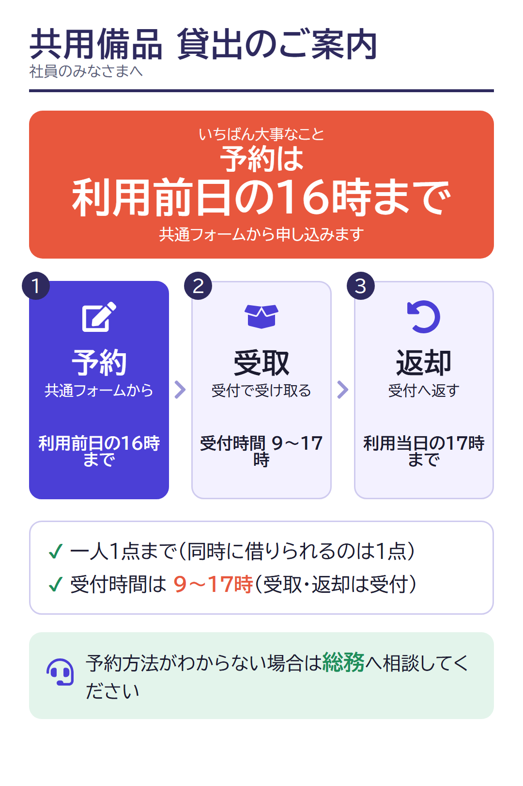
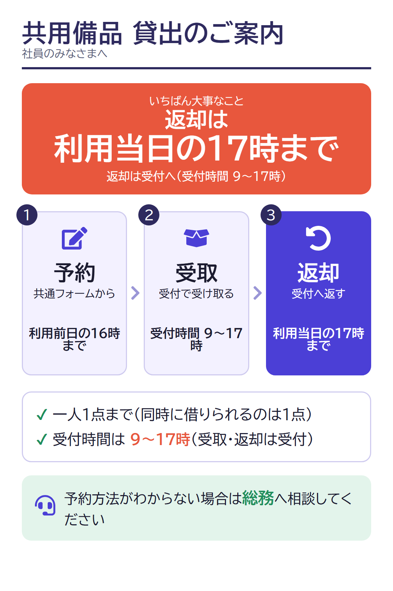
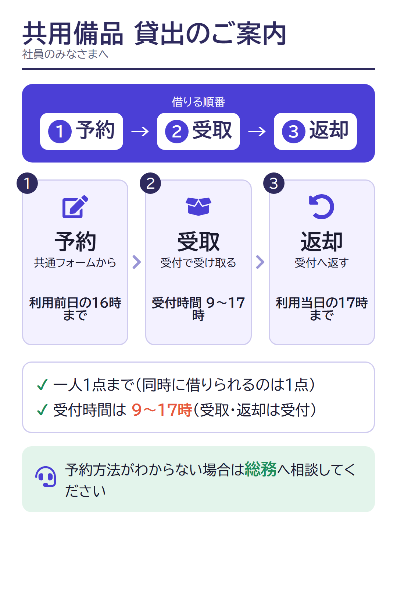
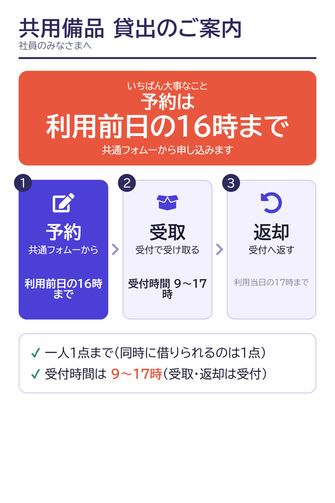
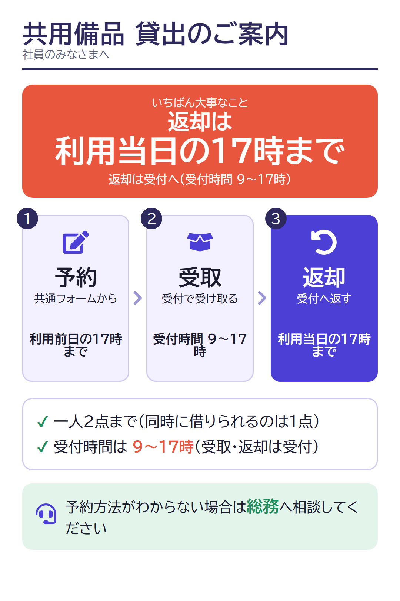

第10回 ワーク用ページ｜文章と画像を組み合わせて、伝わる資料を作る
使い方：コピー → ChatGPTに貼り付け → 送信。このページとChatGPTを切り替えて使います。講義からは退出せず、講師が案内した時刻に講義画面へ戻ります。
コピーボタンが使えないときは、枠の中の文字を長押し（パソコンはドラッグ）して選択し、コピーできます。ChatGPTへのログインは事前に済ませてください。
このページはコピーを助ける補助教材です。お題・手順・時間・完成条件・答え合わせは、講義のスライドに載っています。入力・ログイン・回答の提出はありません。登場する情報はすべて架空です。
ワーク① 本文を確認してから、案内画像を作る
材料（架空）：予約は前日16時までに共通フォーム／受取・返却は受付（9〜17時）／返却は当日17時まで／一人1点／予約方法がわからなければ総務
① 1〜3分：本文を作らせる（新しい会話で。目立たせたい内容に合うものを1つ選ぶ）
重点：予約期限 〔入力文＋材料〕
重点：返却期限 〔入力文＋材料〕
重点：予約・受取・返却の順番 〔入力文＋材料〕
② 3〜6分：同じ会話で案内画像を作る
入力文（画像を作る）
画像ができるまでの時間は保証できません。6分の時点で完成していなければ、下の共通見本画像を使ってください。画像生成が使えない・回数の上限に達した場合は、共通見本の気になる点を言葉にする練習に切り替えます（これは「画像を作った」ことにはなりません）。
共通見本画像（保存して使えます。制作側で用意した見本で、ChatGPTの出力ではありません）










自己確認の基準（スライドと同じ）
- 予約は前日16時まで
- 返却は当日17時まで（受付時間と混同していない）
- 一人1点と相談先が残っている
- 選んだ重点が目立つ
- 文字の誤りや情報の欠落を見つけられた
- 後で直す箇所を1つ決めた
ワーク② 修正して、前と後を比べる
ワーク①の画像、または共通見本の画像を使います。
入力枠（修正指示） 〔【どこを、どう変えるか】を書き換える〕
記入例（返却期限を目立たせる場合）
自己確認の基準（スライドと同じ）
- 狙った変更が反映された
- 維持する条件が残った（予約期限・受付時間・返却期限・一人1点・相談先）
- 新しい誤りが生じていない
- どちらの版を採用するか判断できた（悪化したら前の版を採用してよい）
画像の編集が使えない場合：共通見本の改善点を選び、文字の会話で具体的な修正指示を作ってください（画像の修正を体験したことにはなりません）。
予備ワーク（講師の案内がある場合のみ） 経験のある社員向けに変更する
① 初めて使う社員向けの案内を作る 〔入力文＋材料〕
② 利用経験のある社員向けに変更する（同じ会話で）
AI研修 ワーク用コピー教材（初版）。講師ノートや案件の内部資料は含みません。入力・ログイン・回答の提出はありません。